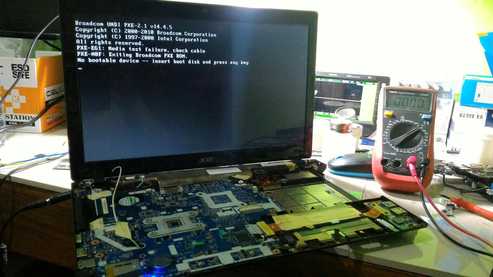

Biaya Ganti Layar Laptop di Tasikmalaya (2026)
Ditulis oleh Benua Komputer · Spesialis Service Laptop Tasikmalaya

Layar laptop retak, berkedip, atau muncul garis-garis sering dianggap sepele padahal bisa merusak penglihatan dan memperparah kerusakan. Berikut panduan ganti layar laptop di Tasikmalaya agar tidak tertipu harga.
Ciri Layar Laptop Perlu Diganti
- Layar retak/pecah akibat jatuh atau tertekan.
- Muncul garis vertikal/horisontal permanen.
- Warna pudar, berkedip, atau flickering.
- Backlight mati (layar gelap padahal ada suara boot).
- Terdapat dead pixel dalam jumlah banyak.
Perkiraan Biaya Ganti Layar
| Jenis Layar | Perkiraan Biaya (incl. jasa) |
|---|---|
| LCD 14" - 15.6" standar (HD) | Rp 350.000 - Rp 550.000 |
| LCD Full HD (IPS) | Rp 500.000 - Rp 800.000 |
| LCD Touchscreen | Rp 700.000 - Rp 1.200.000 |
| MacBook Retina | Rp 1.500.000 - Rp 2.500.000 |
*Harga estimasi, final tergantung merek & ketersediaan sparepart.
Tips Aman Ganti Layar
- Pastikan sparepart original/compat sesuai panel laptop Anda.
- Minta garansi minimal 1 bulan.
- Hindari teknisi yang tidak mau tunjukkan layar bekas yang diganti.
- Bandung murah? Hitung ongkos kirim vs risiko.
Butuh ganti layar?
Konsultasi gratis via WhatsApp 0821-1475-2228. Sparepart bergaransi, pengerjaan rapi.
FAQ
Berapa lama ganti layar?
Rata-rata
1–2 jam (bisa ditunggu) jika sparepart tersedia.
Bisa servis di rumah?
Ya, area Tasikmalaya
& sekitar (Cibeureum, Singaparna, Indihiang, Mangkubumi).
Baca juga: Ciri Laptop Mati Total & Biaya Service di Tasikmalaya
← Kembali ke Beranda